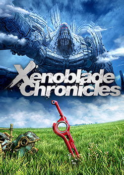

Xenoblade Chronicles
Xenoblade is an incredible RPG that has stuck with me ever since the first time played it. Many of its best experiences are best left for you to experience if you have not, as spoilers can ruin many aspects of its narrative. Still, its cast taught me a lot about the person I would like to become at a formative age. It instilled lessons about perseverance and overcoming hardships through grit and care that I still hold dear.
This story also has deep roots in real world philosophy about fate and causality, and diving into this has been a personal joy. I am grateful that I was able to experience this title and this series has become one of my favorites.